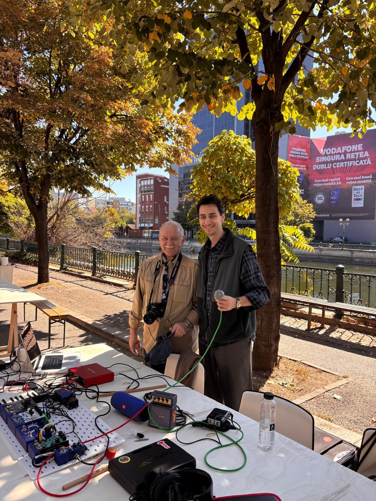
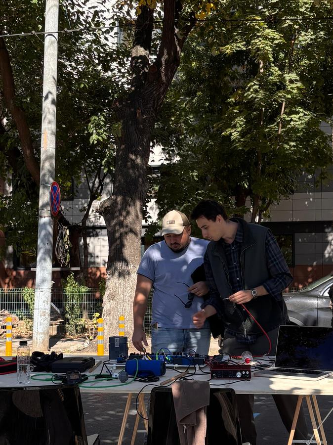
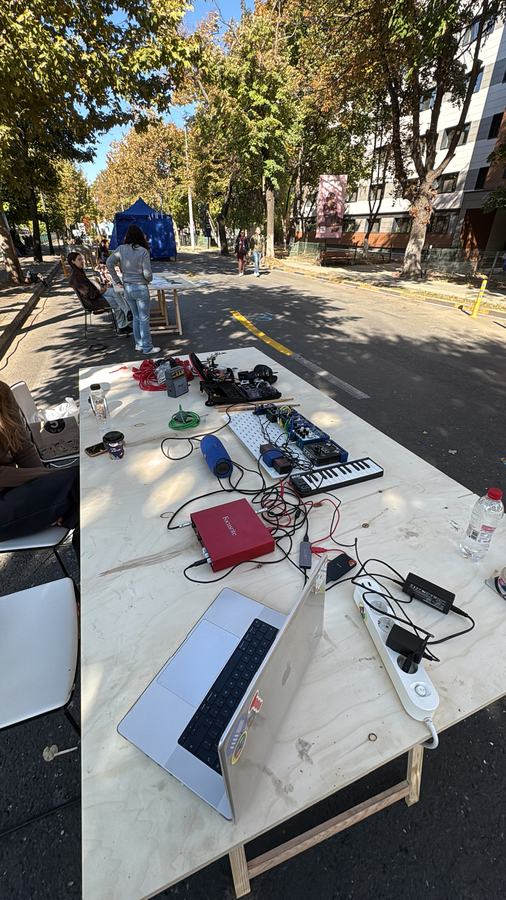
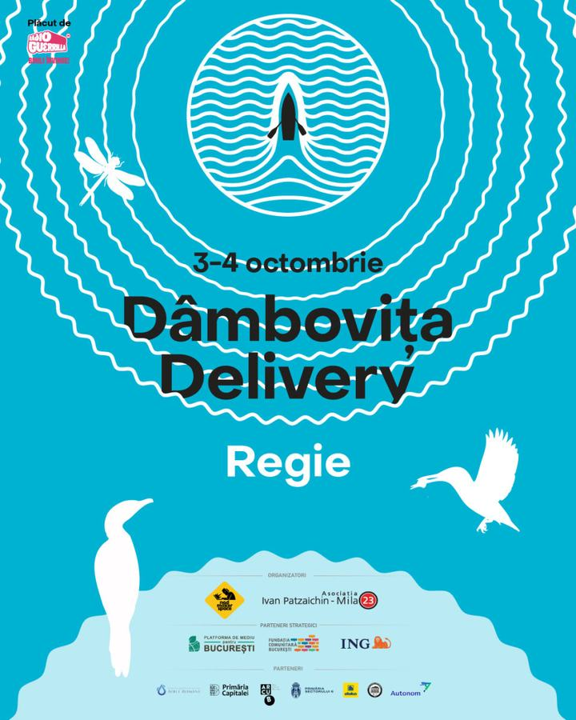

Workshop — 2026
about:sound
Dâmbovița Delivery — Regie, BucharestSelected through an open call for Dâmbovița Delivery (3–4 October, Regie), about:sound was an open-air table where passers-by got hands-on with contact and electromagnetic microphones — listening to the hidden vibrations of objects and the electromagnetic hum of everyday devices, learning how the technology works and trying out basic ways to shape and manipulate the sounds they captured.



